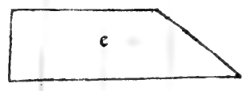
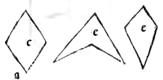
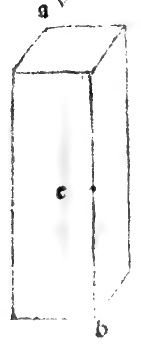
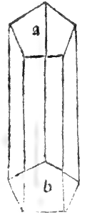

CAPITEL LXIII¶
Von dem Verfahren, alle kantigen Säulen ausmessen zu können.
XLVl. Nachdem die Methode zur Ausmessung der runden gezeigt, so folgt die der eckigen. Bezüglich dieser gilt gleicherweise diese als Regel und mit Genauigkeit, nämlich, dass man stets den Flächeninhalt einer ihrer Grundflächen bestimme, welche man will, und was es macht, multiplicire man sodann mit der Höhe oder Länge besagter Säule. Und dies letztere Product ist genau ihre körperliche Masse oder Ausdehnung. Und mögen sie von so viel Seitenflächen sein, wie man will, es trügt niemals. Angenommen z. B. die kantige tetragonische Säule ab, welche 10 hoch sei und jede ihrer Grundlinien sei 6 nach jeder Richtung. Ich sage, dass man zuerst den Flächeninhalt einer der besagten Grundflächen bestimme.
Da diese gleichseitig, so wird man eine der Seiten, nämlich 6, mit sich selbst multipliciren, das macht 36, und dies macht genau den Inhalt der Grundfläche. Jetzt sage ich, dass man dies mit der Höhe oder Länge der ganzen genannten Säule multiplicire, d, h. mit zehn macht 36o. Und so viel Ellen oder Fuss wird genau der Inhalt besagter Säule betragen, derart, wie es vorher von der runden gesagt. Und ebenso bestimme man, wenn die Grundflächen ungleichseitig oder ausserdem unregelmässig wären, nur nach den von uns im genannten Werke gegebenen Regeln stets ihren Flächen inhalt und multiplicire das Producta) mit ihrer Höhe, und man wird den gesuchten untrüglich bei jeder erhalten.
Und zur Erledigung aller andern muss man diese selbe Regel beibehalten, seien sie drei-, oder fünf-, oder sechs- oder siebeneckig und so in Einzelnen, d. h. dass man je nach Erforderniss ihrer Grundflächen jene zuerst ausmessen müsse, wenn sie dreieckig sind, nach der Regel der Dreiecke, und wenn sie pentagonisch sind, nach der Regel der Pentagone, und wenn sie hexagonisch sind, auf ähnliche Art, über welche Formen und Figuren die Regeln weitläufig in unserm genannten Werke angegeben sind, und da in Folge ihrer zahlreichen gedruckten und nunmehr in aller Welt verbreiteten Menge der Zugang zu demselben leicht, so kümmere ich mich hier nicht darum sie anderweitig anzuführen, und somit werden wir mit besagten Säulen abschliessen und im Folgenden von ihren Pyramiden sprechen.
Marginal Woodcut Diagrams (Paganini 1509)¶

Folio 0054 Diagram 5¶

Folio 0054 Diagram 6¶

Folio 0054 Diagram 8¶

Folio 0054 Diagram 7¶